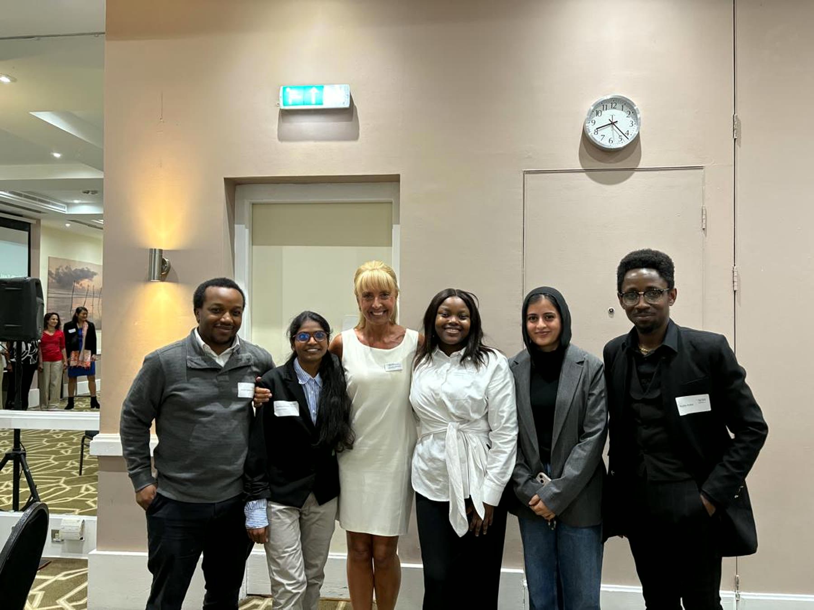
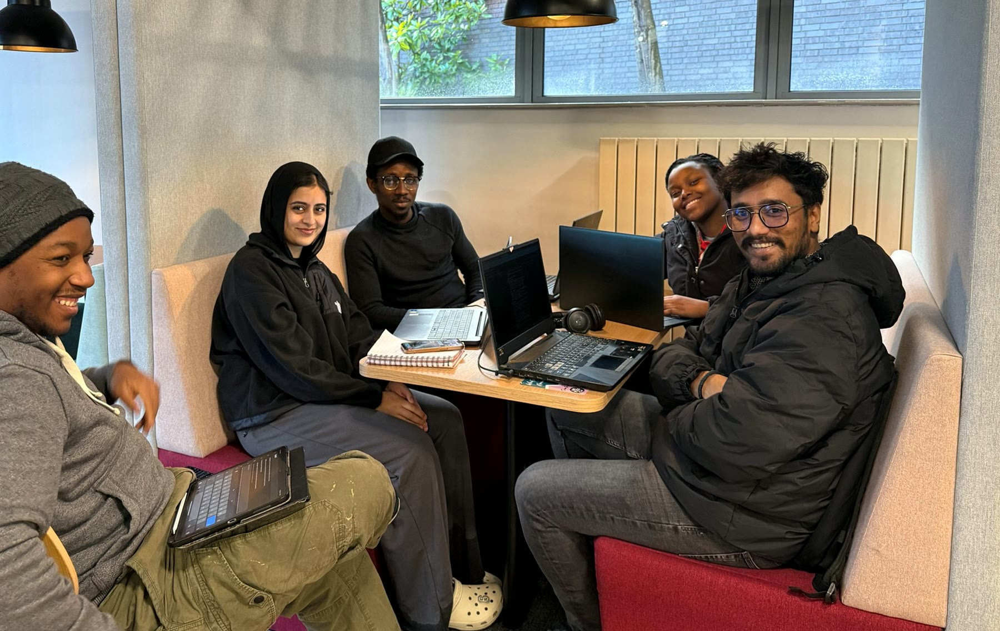
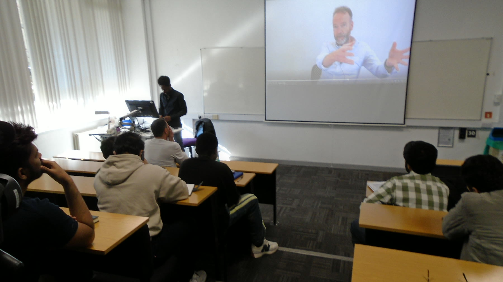
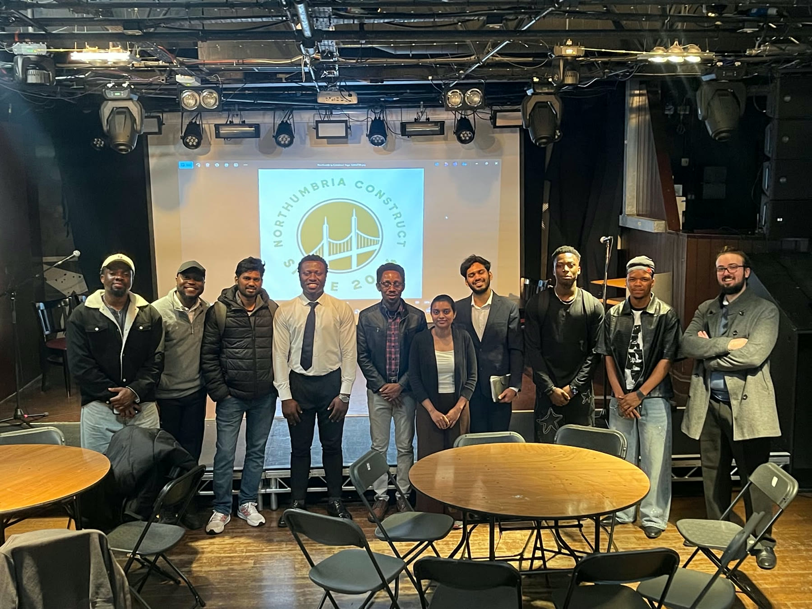
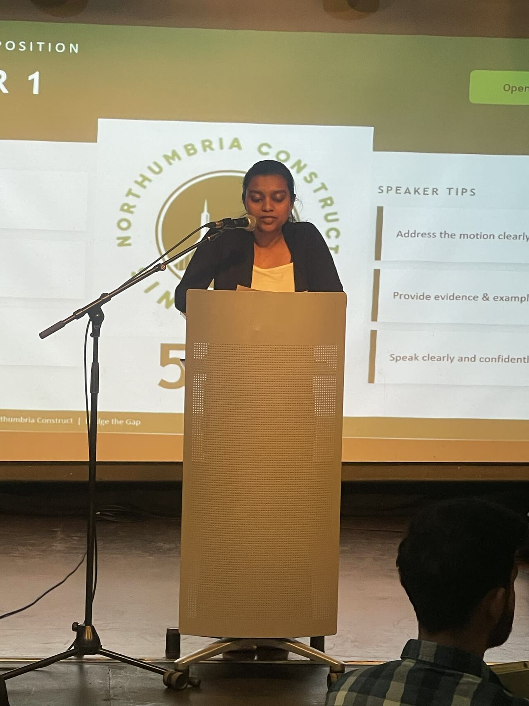
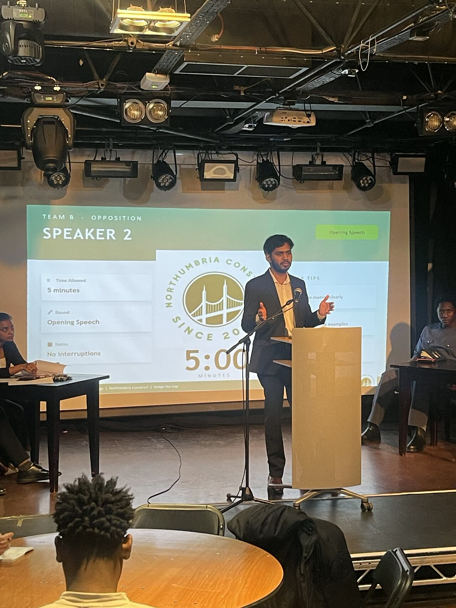
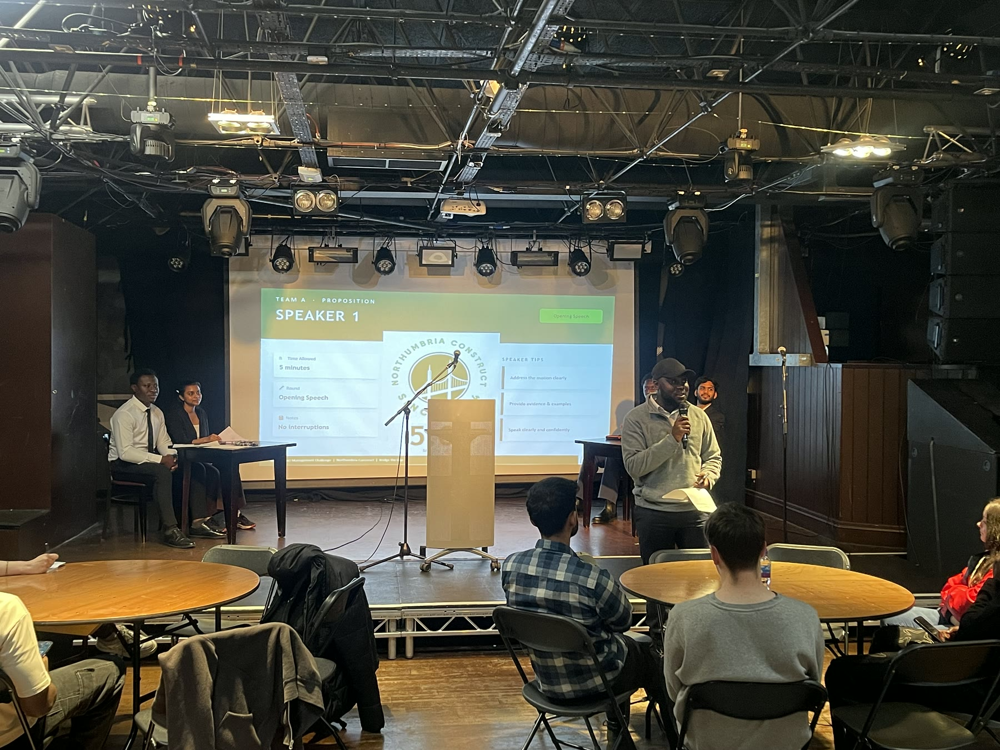
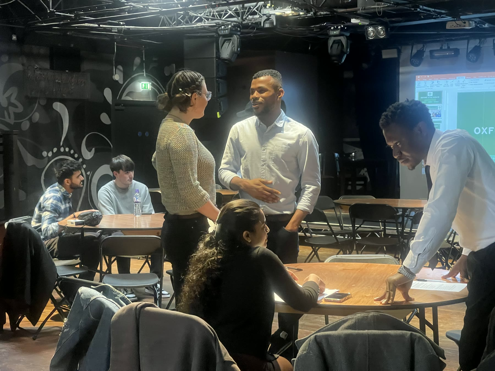

Creating projects with lasting professional impact.
Every initiative strengthens the relationship between academia and
industry while helping participants build knowledge, networks and
practical experience.
The project that led to the creation of Northumbria Construct.

The Bridge the Gap project delivery team.
Project overview
Developed during the
Association for Project Management (APM) Project Management
Challenge, the project investigated why many students struggled to
engage effectively with the construction industry despite the
wealth of opportunities available through universities,
employers and professional institutions.
Using structured project management methodologies, the project
combined research, stakeholder engagement, industry interviews,
storytelling and educational outreach to better understand the
barriers preventing meaningful participation.
The findings demonstrated that the primary challenge was not the
absence of opportunity, but the lack of visibility,
understanding and accessibility.
Recognising that these challenges extended beyond the
competition itself, the project team transformed Bridge the Gap
into a continuing programme of professional engagement, leading to
the establishment of Northumbria Construct.
Key activities
Research and stakeholder surveys
Industry interviews and professional storytelling
Educational seminars and outreach activities
University, institution and industry collaboration
Innovative stakeholder engagement approaches
Transition planning for long-term sustainability
Project outcomes
Better understanding of engagement challenges
Evidence-based recommendations
Innovative engagement frameworks
A sustainable programme of professional engagement
Demonstrated benefit realisation through transition

Project delivery team collaboration (L-R: Takudzwua, Sobia, Kufre, Yemi, Vineeth)

First Bridge the Gap seminar at Northumbria University
Project · Newcastle Hub
Oxford-Style Debate
A structured debate that turned discussion into practical
recommendations and new opportunities.
Debate motion
“Universities Are Failing to Prepare Graduates for Industry.”
Project overview
The project brought together participants, academics and industry
professionals to examine the responsibilities of universities,
individuals, employers and professional institutions in preparing
graduates for professional practice.
Audience feedback and recommendations were analysed and compiled
into a formal report presented to stakeholders within
Northumbria University Experiential Learning Team
and the Chartered Institute of Building (CIOB).
Recommendations included clearer communication around
opportunities and improved signposting of Personal Protective
Equipment availability for construction site visits. These
actions contributed to increased participation in
subsequent CIOB site visits.

Participants at the Northumbria Construct Oxford-Style Debate.
Objectives
Meaningful dialogue
Create collaboration, evaluate industry readiness and produce
evidence-based recommendations.
Activities
Structured engagement
Plan the debate, collect stakeholder feedback and present
findings to institutional partners.
Outcomes
Measurable benefits
Improved communication, better PPE signposting and increased
participation in CIOB site visits.

A first-time speaker takes the floor

An opposition speaker presents his case

The event was hosted by the President of Northumbria University Student Union Isaac Etonam

Professional networking after the debate
Project · Newcastle Hub
Supporting the Gateshead engagement day.
CIOB North East Tomorrow’s Leaders Professional Engagement Day · Gateshead College ·
Northumbria Construct contributed to the planning, coordination and delivery of the professional engagement day involving CIOB North East Tomorrow’s Leaders and Gateshead College.
Coordinating participation
Our contribution covered stakeholder coordination, volunteer mobilisation, project planning, activity preparation and resource coordination. NorCon Projects was used to support the work, alongside the BRIC construction careers activity.
Contributions and learning
The engagement involved CIOB Tomorrow’s Leaders, Gateshead College, Northumbria Construct and individual volunteers. Northumbria Construct’s contribution forms part of that collective delivery.
Delivery and learning
Callum O’Connor led Northumbria Construct’s volunteer team, alongside Vemula Sai Praneeth, Finn Mulholland, Aditya Shetty, Mayuri Shinde and Collins Tamunotonye. Activities drew on the CIOB Think Construction Toolkit and piloted BRIC with approximately 40 students across eight teams.
The pilot identified opportunities to simplify BRIC instructions and refine gameplay. Volunteers put leadership, communication, teamwork and stakeholder engagement into practice; the experience reinforced the value of participatory learning and accessible professional networks.
Testing project governance in practice
Version 2 of NorCon Projects supported the contribution, building on the debate application with baselines and governance, risk and issue management, change control, benefits and value management, sustainability tracking and enhanced reporting.